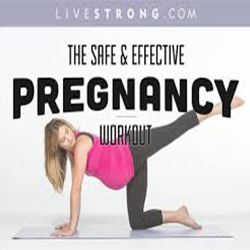

THESE EXERCISES ARE BENEFICIAL



There are usually many questions that come to mind when planning how to exercise during pregnancy. Physical exercise is bodily activity that improves or maintains physical fitness and overall health and wellness. This type of exercise during pregnancy is important and can help with some common discomforts of pregnancy and even help prepare your body for labor and delivery.Pregnant woman on a tredmill.
Is exercise during pregnancy safe?Overall and in most cases, exercise is safe during pregnancy. You will usually find it is even recommended. Typically, the first rule of thumb is if you were physically active before you were pregnant, it is likely safe to remain active during pregnancy. More than likely, your healthcare provider will tell you to remain active, as long as it is comfortable and there are no other health conditions suggesting otherwise.
Now is not the time to exercise for weight loss, however, proper exercise during pregnancy will likely help with weight loss after the delivery of your baby. Exercise does not put you at risk for miscarriage in a normal pregnancy. You should consult with your health care provider before starting any new exercise routine. We have more information at exercise warning signs.
What are the benefits of exercise during pregnancy? Exercising for 30 minutes on most, or all, days can benefit your health during pregnancy. Exercising for just 20 minutes, 3 or 4 days a week, is still beneficial, as well. The important thing is to be active and get your blood flowing. To have success in completing exercises during pregnancy, it is a good idea to plan the days and times during the week when you will exercise. As shown in the photo above, prenatal yoga is a great, low impact exercise that can be highly beneficial for pregnant women.
Here are some of the benefits from exercise during pregnancy you may experience:
-->Helps reduce backaches, constipation, bloating, and swelling
-->May help prevent, or treat, gestational diabetes
-->Increases your energy
-->Improves your mood
-->Improves your posture
-->Promotes muscle tone, strength, and endurance
-->Helps you sleep better
-->Regular activity also helps keep you fit during pregnancy and may improve your ability to cope with labor. This will make it easier for you to get back in shape after your baby is born.
You can visit this page for more information about the effects of exercise on pregnancy.
Guidelines for choosing an exercise during pregnancy
If you participated in a regular exercise activity prior to becoming pregnant, it is probably fine to continue to participate during your pregnancy. There are many exercises that are safe to do during your pregnancy, but it is important not to overdo it and to use caution.
Many people were uneasy when they discovered that Olympic volleyball player Kerri Walsh Jennings had received the “OK” from her obstetrician to play competitive volleyball while pregnant. The American Pregnancy Association would have cautioned against this because of the vulnerability of impact with another player, the ground, or parts of the surrounding court area. However, it is important to highlight a key truth in the counsel her healthcare provider gave.
Your baby is surrounded by fluid in the amniotic sac, which is nestled inside the uterus, which is surrounded by the organs, muscles and your physical body. This actually creates a rather safe environment for your developing baby. However, even with this protection, it is recommended you avoid high-impact exercise .
You may want to include these basic guidelines in planning exercise during pregnancy:
Be sure to wear loose fitting, comfortable clothes, as well as, a good supportive bra.
Choose well-fitting shoes that are designed for the type of exercise you are doing.
Exercise on a flat, level surface to prevent injury.
Eat enough healthy calories to meet the needs of your pregnancy, as well as, your exercise program.
Finish eating at least one hour before exercising, see also pregnancy nutrition.
Drink plenty of water before, during and after your workout.
After doing floor exercises, get up slowly and gradually to prevent dizziness.
You will probably want to avoid these types of exercises during pregnancy:
-->Activities where falling is more likely
-->Exercise that may cause any abdominal trauma, including activities that with jarring motions, contact sports or rapid changes in direction
-->Activities that require extensive jumping, hopping, skipping, or bouncing
-->Bouncing while stretching
-->Waist twisting movements while standing
-->Intense bursts of exercise followed by long periods of no activity
-->Exercise in hot, humid weather
-->Do not hold your breath for an extended period of time
-->Do not exercise to the point of exhaustion